See a feature you love in someone else's app? Find out how it works — with proof.
REA (short for Reverse Engineer Anything) lets an AI helper (a chatbot that can use tools) study a program you don't have the recipe for. Every claim it makes comes with the spot where it found it.
Where it can't look, it says so in red instead of guessing.
An independent explainer for morluto (morluto)'s REA — built to take you from "never seen it" to "ready to implement".

01
You can only see the outside
Why does this exist?
You open a popular app and its search finds your notes instantly. You want that in your own project. But the app is a sealed box.
So you guess. You poke at it for a weekend, then ship a copy of what you think it does.
You could use special tools to look inside. But each kind of program needs its own tool, and none of them share notes. Ask a chatbot instead, and you get a confident paragraph that points at nothing: no place, no file, no line.
That is a drawing with no measurements.
The painA guess you can't check is worse than no answer. You build on it, and find the mistake later.
02
One door into many kinds of program
What does it actually do?
REA gives your AI helper a set of tools for looking inside programs. It works on apps, web code, websites, phone apps and more.
You ask a plain question, like “how does search work in this app?” The helper picks the right tool and looks. Then it writes back what it found, where it found it, and what it could not reach.
The helper can then write your own version and test it. Everything runs on your computer.
03
The pen only draws where the stylus touched
Why is it elegant?
Picture a drawing tool with two arms. One arm traces the real thing. The other arm copies each line onto your page. The copy arm cannot move unless the tracing arm touched something.
REA works the same way. A finding is only kept if the tool really touched it, and the finding carries the place. A claim with no touch stays a red question mark.
Oh — so the gaps are part of the answer. The page shows what is known and what is not, and nothing in between is made up.
04
Four rings, and one rule: look inward
How is it built?
Under the hood, REA is a program with two front doors and a swappable set of tool tips. The code is built in rings. Outer rings may use inner rings, never the other way round.
The front doors are an MCP server (the standard plug that lets chatbots call tools) and a terminal command. Both run the same workflows.
The tool tips are adapters for Hopper, Ghidra and IDA (programs that read compiled code), a browser, JavaScript, .NET, Android, firmware and more. Pick one and the rest are untouched.
At the center sits the evidence rules: what was seen, what was worked out, and what is still unknown.
05
What you would do with it
Could I use this?
This is a real screenshot from the project: REA starting its helper inside Hopper while it inspects a program. Your agent drives this; you read the answers.
1 Rebuild a feature you admire most common
Ask your agent how a feature works in an app you can't open. It traces the code, shows the evidence, then writes and tests a version for your project.
Understand how search works in the Notes app,
show me the evidence, and build a similar
feature for my project.2 Compare two versions of an app
Point the agent at an old and a new release. It reports what changed, with the places it looked.
3 Chase a crash to its cause
Give it the crash. It connects the symptom to the code path and flags anything it could not reach.
06
Two minutes to your first answer
How do I start?
You need Node.js 22, 24 or 26+ and npm. For compiled programs you also need Hopper, Ghidra or IDA. JavaScript apps need nothing more.
npx rea-agents setup- Run the command above. It lists your agents, such as Claude Code, Codex or Cursor, and shows exactly what it will change.
- Approve the changes. Setup adds REA to your agent and saves a backup of every file it touches.
- Restart your agent. Then ask a question about a program, like the example above.
- Or try the terminal first. Run
npx -y rea-agents@latest analyze-javascript-application /path/to/app --json. You will see a list of modules, imports and where each came from. - What's next. Read the guides at rea.tools, and use
rea updateto stay current.
07
Your AI can read this page too
Does my AI get it too?
This explainer ships with a knowledge pack: the whole repo, indexed so any AI helper can search it and answer questions about REA. Humans get this page; your AI gets the pack.